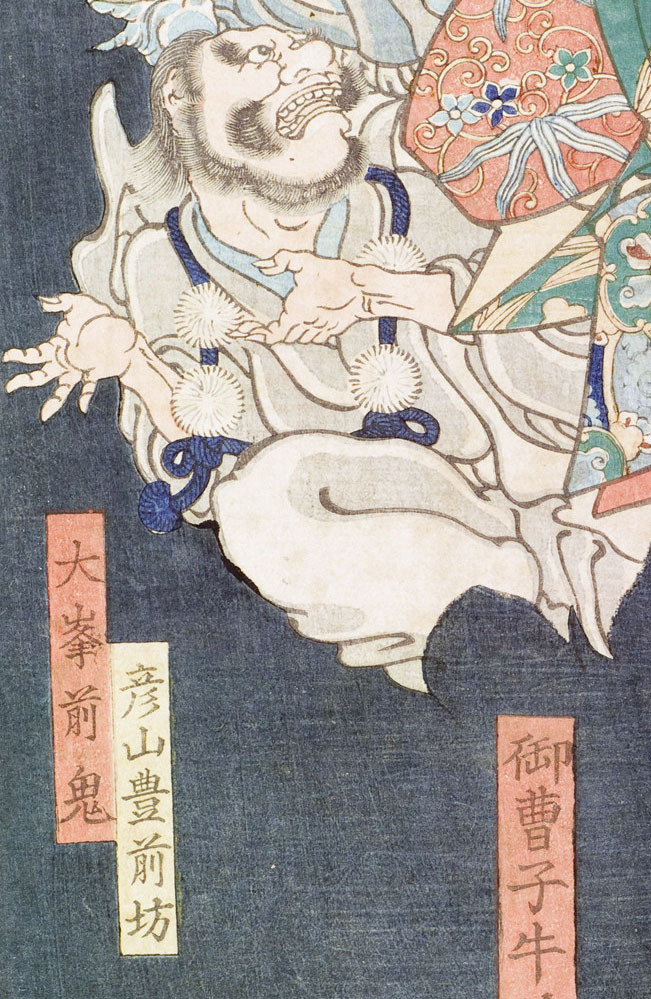

天狗；テング，結袈裟；ユイゲサ

天狗。彦山豊前坊。眉毛が濃く、目玉は丸い。鼻は大きく、頬と顎にひげを生やしている。白い上着と袴を身に着け、青と白の結袈裟を掛けている。のけぞって、やや上方に目を向けている。
著作者：一魁齋芳年（月岡芳年）／出典：親書誌：U426_nichibunken_0138：五條の月；ゴジョウノツキ／日付：2009／資源識別子：U426_nichibunken_0138_0001_0008
Copyright (c)2010- International Research Center for Japanese Studies, Kyoto, Japan. All rights reserved.